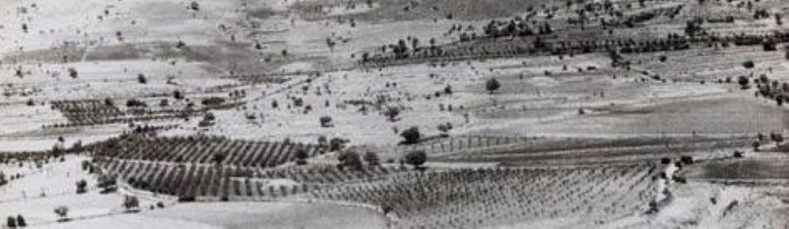
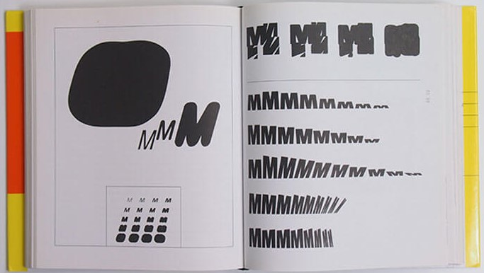

Is Wolfgang Weingart the Pioneer of New Wave or Swiss Punk Typography?
German-born typographer and graphic designer Wolfgang Weingart is said to be one of the most influential typographers, renowned by many as the father of New Wave typography. The Swiss punk style, which Weingart had a large hand in spreading, was one of the most important styles of the graphic design world in the 20th century. He, however, had his own unique style that began with modernist Swiss typography and led to him disregarding the informal ruleset typographists of the time followed and the prominent International Style.
Early Life
Weingart's first encounter with his creative side was at the end of WWII when his home city in southern germany called Friedrichshafen was under aerial attacks, this didn't concern him, however, it surprisingly allowed him to realise he is more of a doer and less of a thinker (Museum für Gestaltung Zürich, 2017). In terms of education, Weingart was a self-proclaimed bad student, having to repeat a year three times, and never having a strong affinity with studying, later, in 1958, when Weingart was 17, he attended the Merz Academy in Stuttgart for an art degree, where he completed a 2-year applied graphic arts course, which opened the door into the design world for young Weingart which pushed him to train as a typographer. This appears to be a more relevant life path, playing more to Weingart's strengths which would benefit him greatly in the future.
An apprenticeship was the next step in Weingart's life; he began a three-year typesetting apprenticeship at Ruwe Printing. This was also when he began experimenting with Swiss Typography.
Linocut, woodblock printing and typesetting were things Weingart became interested in, and he later utilised these in his typographic posters. The setting type was like a childhood delight for him. This served as Weingart's introduction to the craft of typography and him developing his distinctive style.
Mastering the technique of letterpress printing led him to experiment more with letters and type sets in round compositions. He says it happened by accident when he knocked over a wooden typecase, with over 110 boxes of letter sets scattered everywhere which he would have to arrange back in alphabetical order. Giving him the idea of turning this incident into a fun adventure by grouping the smallest typeface (six-point size) in a round formation and printing them, as well as printing the foot of the type sets, giving an intriguing pattern. This, for Weingart, was the beginning of exploring the strange world of typography and its possibilities. Unconventionally using materials became typical of Weingart, as he always strived to create unique designs.
After enrolling at the Basel School of Design in 1963, Weingart decided to relocate to Switzerland.
Teaching
After studying at Basel, he was asked to teach there, in the new graphic design department. While teaching, he would continue working on his designs at lunch and said that others there must have thought he was "nuts"(Museum für Gestaltung Zürich, 2017), but he was simply fully engrossed in, and dedicated to his work.
Weingart was highly dedicated to his teaching at Basel, inspiring students to push the limits, all while avoiding forcing his style upon them. Instead, he pushed his students to find their unique style, and selfishly create without regard for outside opinions, thinking outside of the box in every way he can.
Another place he spread his knowledge was the Yale Graphic Design summer program in Brissago, Switzerland. His extensive teaching career influenced the new generation, with his new approach to typography, he had many new ideas to spread which helped the development of the New Wave style. In Weingart's eyes, teaching was a huge part of his life.
Delivering lectures all over Europe, New Zealand, Asia, Australia, and North and South America was something Weingart accomplished over four decades of his life.
Inspirations
Weingart had many sources of inspiration throughout his life, most being unconventional. He found a lot of inspiration while travelling to deliver lectures across the world. One major project that arose because of the trips was a line project inspired by deserts in Palmyra. In an interview Weingart claimed he found many interesting comparisons in the deserts (Museum für Gestaltung Zürich, 2017), the line issues he encountered, again and again, intrigued him, so he decided to juxtapose his line compositions with the photographs of the desert, to create entirely new designs.
Processes
Weingart is known for his rebellious nature when creating, with non-traditional processes. A huge part of his creative process was experimenting, he never wanted to create in a rigid way, which is why he did not utilise a middle axis, the reason for it was that he wouldn't have as many possibilities as an axis force one to work from top to bottom, not left to right, or even asymmetrically, his way has much more freedom and allows for space to be included. Another thing Weingart avoided was a grid, this again was restricting and forces one into a cage, without the possibility to move in every direction, as there is always an end with a grid, Weingart claims this type of rigid typography cannot be developed further (Museum für Gestaltung Zürich, 2017), something he strives for in every design.
Whenever he learned to typeset, he employed those specific techniques in his works, resulting in mainly typographic posters, however, they were never as typical as his experimentation with the letters, curving them and expanding letter spacing, alienating them and so creating intriguing outputs.
The use of lithographic film then caught Weingart's attention, this was a rarely used technique back then. In the 70s he began experimenting with it, the fascination with the material came from its transparency, and the endless possibilities of layering images, text and other components. The ability to blend and transform the individual elements to create a single idea immersed him deeply, and from this emerged his lithographic film collages.
These processes that rejected norms inspired other graphic designers alike to start experimenting more and expanding their creative ways.
Designs
Near the beginning of Weingart's typography journey, fonts like Helvetica and Univers were in fashion, these, however, were too tacky, as he preferred this 100-year-old, rustic font called Akzidenz-Grotesk, which was simplistic in nature but satisfied Weingart.
For The Letter M project, Weingart utilised the font Berthold-Grotesk, which he rediscovered in a typecase at Basel. The purpose of this project was to poke fun at the fonts he found kitschy. While moving down the rows of the Ms, he blurred boundaries, deconstructing and alienating them, until he was satisfied with the forms that arose. Breaking the rules of typesetting was a passion of his, which came about from Weingart's early days, and never truly dissipated but evolved.
At the stage where Weingart made a transition from typography to graphics, he was commissioned to make an advertising poster for Birkhauser publisher's book, "The Swiss Poster". The conditions were that the Times font and the Matterhorn had to be displayed within.
Weingart decided to employ his film technique to build up the poster, as he was no photographer. Beginning with the Matterhorn element, he used a xerox of a crumpled-up tissue and found a Matterhorn within the fold. He employed his preferred method of using lithographic film to display the motif of clouds in the background. No computers have been used in the process of this poster, this is what is so special and unique about each design.
"We persevered as dedicated craftsmen struggling to master the intractable rules of metal typesetting and letterpress printing" (Polano et al. 1998)
However, because of that, it was much more difficult, as making proof each time would've been expensive, so he was forced to work out everything at the machine, to see how it interacted, It is a hugely long process that rarely allows you to predict the colour with ease, meaning the results can be a complete surprise. It turned out spectacularly anyway, with the film technique truly paying off in creating the desired motive, uncommonly.
Conclusion
Therefore, I believe the question of whether Wolfgang Weingart is the father of Swiss or New wave typography has been answered. He lived up to the title, with his visual adventures and the complete freedom with which he creates proves that.
To conclude, the complex style of Weingart that is repeatedly immersing and comes about from playful experimentation, the unusual techniques within typography and the use of lithographic film, have been insanely revolutionary for their time and so proves that Weingart was true, the father of Swiss/ New Wave style.